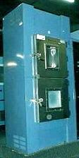

|
Thermal Shock
Test (TST)
Thermal Shock
is performed to determine the
resistance
of the part to
sudden
changes in temperature. The parts undergo a specified number of
cycles,
which start at ambient temperature. The parts are then exposed to an
extremely low
(or high) temperature and, within a short period of time, exposed to an
extremely
high
(or low) temperature, before going back to ambient temperature.
After the
final cycle, external
visual
examination
of the case, leads, and seals shall be performed at 10 X to 20 X. The
marking shall also be inspected at no greater than 3 X. An illegible
mark and/or any evidence of damage to the case, leads, or seals after
the stress test shall be considered a failure.
Electrical
testing
of the samples to device specifications must also be performed to detect
electrical failures accelerated by the temp cycle.
|
 |
|
Fig.
1. A Thermal Shock Chamber |
Failure
acceleration due to Thermal Shock and
Temp Cycling depends on the following
factors: 1) the difference between the high and low temperatures
used; 2) the transfer time between the two temperatures; and 3) the
dwell times at the extreme temperatures.
Failure mechanisms
accelerated by
thermal shock include die
cracking, package cracking, neck/heel/wire breaks, and bond lifting.
For reliability testing or
qualification of new devices, 1000 temp cycles are usually performed,
with interim visual inspection and electrical test read points at 200X
and 500X.
Two industry standards that
govern Temp Cycle Testing are the Mil-Std-883 Method 1011 and the JEDEC
JESD22-A106.
|
Mil-Std-883, Method 1011 Specs : Thermal
Shock Test
-
Total Transfer Time < 10 seconds
-
Total Dwell Time > 2 minutes
-
Specified Temp reached in < 5 minutes
- Must be conducted for a minimum of 15 cycles
Table 1. Mil-Std-883
Method 1011 Thermal Shock Test Conditions
|
Condition |
Low
Temp |
High
Temp |
|
A |
-0
(+2/-10) deg C |
100
(+10,-2) deg C |
|
B |
-55 (+0/-10)
deg C |
125 (+10,-0)
deg C
|
|
C |
-65
(+0/-10) deg C |
150 (+10,-0)
deg C
|
|
|
JEDEC
JESD22-A106 Specs : Thermal
Shock Test
-
Total Transfer Time < 10 seconds
-
Total Dwell Time > 2 minutes
-
Specified Temp reached in < 5 minutes
- Must be conducted for a minimum of 15 cycles
Table 1. Mil-Std-883
Method 1011 Thermal Shock Test Conditions
|
Condition |
Low
Temp |
High
Temp |
|
A |
-40 (+0/-30) deg
C |
85 (+10/-0) deg
C |
|
B |
-0
(+2/-10) deg C |
100 (+10,-2) deg
C |
|
C |
-55 (+0,-10) deg
C |
125 (+10,-0) deg
C |
|
D |
-65 (+0,-10) deg
C |
150 (+10,-0) deg
C |
|
Reliability
Tests:
Autoclave
Test or PCT; Temperature
Cycling; Thermal
Shock;
THB;
HAST;
HTOL;
LTOL;
HTS; Solder
Heat Resistance Test (SHRT);
Other
Reliability Tests
See Also:
Reliability
Engineering;
Reliability Modeling; Qualification
Process; Failure
Analysis;
Package Failures; Die
Failures
HOME
Copyright
©
2001-Present
www.EESemi.com.
All Rights Reserved.
|